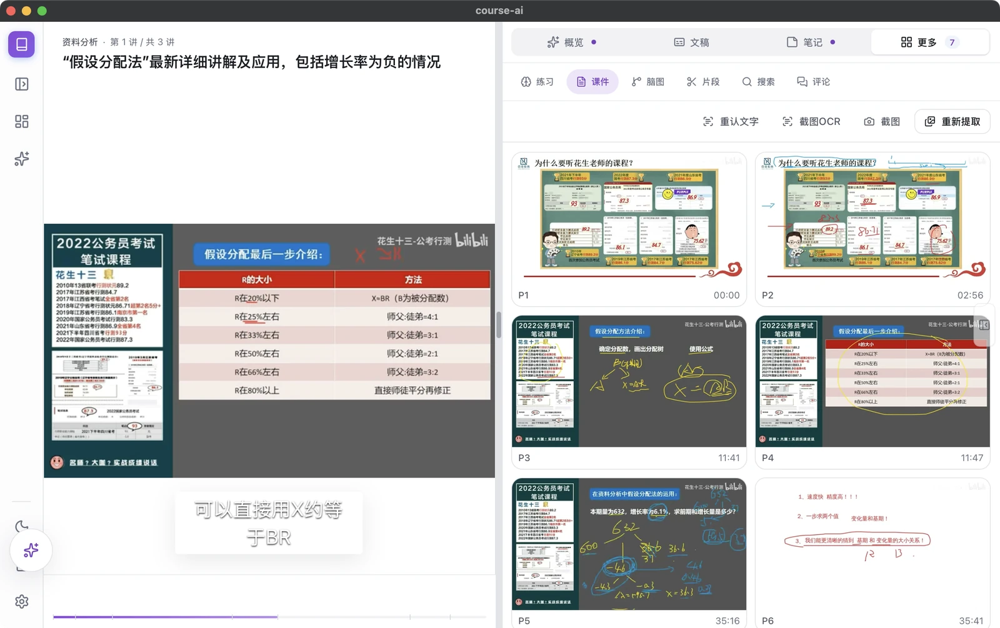
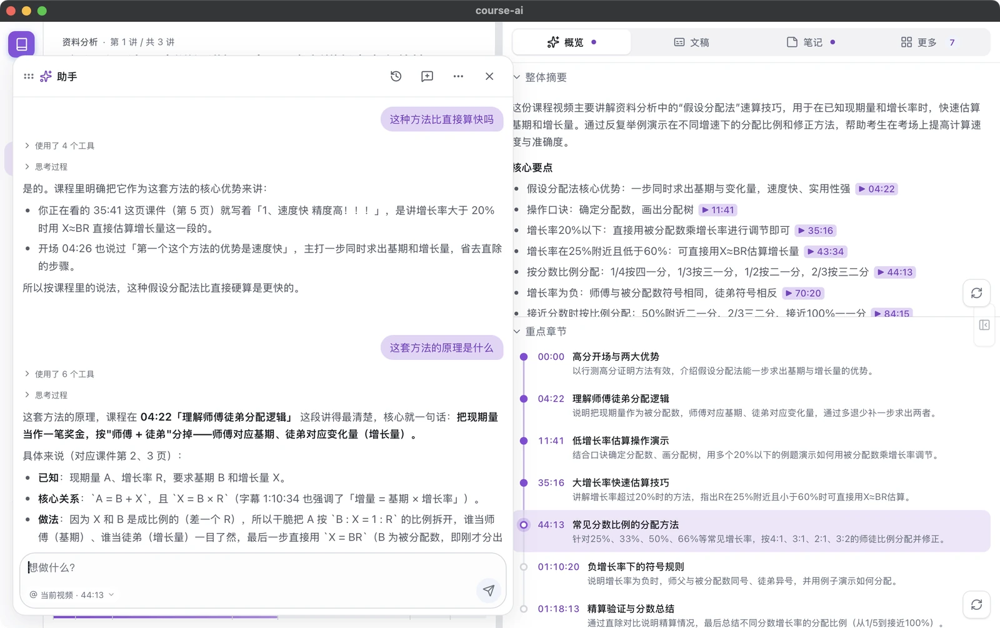

v0.3.0 新功能
看得更爽，学得更全，也更好分享。
弹幕热度曲线
进度条上方画出弹幕密度，最热的几处打点，点一下就跳到「高能」片段。
讲义一键成 PDF
每页课件配上这一页老师讲的要点，按章节排好，在浏览器里直接存成 PDF。
分享图
笔记长图、脑图图片、学习周报，1080px 宽，发小红书、朋友圈正合适。
双语字幕
字幕翻成中 / 英 / 日 / 韩，播放器在原文、双语、译文之间切换，外语课也能跟上。
订阅合集
导入播放列表时勾选订阅，有新视频自动导入并开始处理，追更不用再手动搬运。
YouTube、播客与音频
YouTube、播客链接和本地 mp3 / m4a 都能导入；公式在课件、笔记和题目里统一渲染成 LaTeX。
学习资料
视频看完，资料也整理好了。
章节、概览、笔记、练习题、脑图和知识点，都从这节课的文稿和课件文字里生成。可以直接拿来复习，也可以再改、导出，按自己的习惯整理。
章节、笔记与脑图
把一节课拆成章节，配上概览；再生成图文笔记和脑图。课件上的板书、公式也一并被识别出来喂给 AI，写在片子上但没念出来的内容不会丢。
知识点
每个视频自动抽取知识点，同名和近义的自动合并成课程清单。每个知识点有解释、学习进度、搜索高亮和补卡入口。
练习题与间隔复习
按课程内容自动出题；做完的题目进入 FSRS-4.5 间隔复习调度器，打分前就能看到四个档位分别把下次复习推到多久之后。在文稿里划一段也能做成挖空卡。
手动改过字幕后，基于旧稿生成的笔记、章节等 AI 产物会自动标为「已过期」，提醒你重新生成。
跨视频搜索字幕和课件文字，命中直接跳到对应时刻。中文搜索按稀有度加权，自然语言问句也能命中。
每次大模型调用的 token 消耗都有记录，缓存命中率和思考消耗看得见，帮你掌握 API 花费。
处理管线
导入之后，全自动处理。
视频导入后，CoursePilot 会分步处理：抽音频、转写、字幕纠错，再到章节、概览、笔记、练习题和脑图。课件提取和语音识别并行，不用互相等。每一步都有进度，哪一步失败了也能单独重试。支持批量导入文件夹和 B 站播放列表，云端识别中断后可以断点续跑。
拖入本地视频，或粘贴 Bilibili / URL 下载。
本地 whisper.cpp，或火山、阿里云 DashScope。
按分段 id 修正错别字和口语停顿。
章节、概览、笔记、练习题和脑图。
间隔复习知识点，搜索文稿，向课程提问。
课件
课件翻到哪，它就存到哪。
按画面变化比例判断换页，截取动画稳定后的那一帧，跳过纯色页和转场。每一页整批 OCR，板书上的公式和定义不会丢。导入时自动和语音识别并行提取，硬件解码采样，还会先裁掉视频自带的黑边。

搜课件上的文字时直接给出页面缩略图和页码，点击跳到讲这一页的时刻。
离线时用本地 tesseract；课件文字复杂时，换成阿里云 OCR 或 DeepSeek 视觉模型。整批识别，一页失败不影响其他页。
识别出的课件文字和讲稿按时间交织，一起喂给摘要、笔记、出题——写在片子上但没念出来的定义和公式不再丢失。
提问
直接问这门课。
单个视频的问答按相关性检索上下文，不用把整份字幕塞进去；课程级问答可以跨视频提问，两段式重排挑最相关的段落。在文稿里选中一段也能直接追问。问句搜不到东西时，会自动改写问题再试一次。

真实对话截图：回答引用课件页码和 [mm:ss] 出处，点一下就跳到视频对应位置。
AI 助手
说一句话，它帮你做。
屏幕角落的悬浮球，点开就是一个能帮你操作应用的 AI 助手。搜 B 站找视频、新建和管理课程、跳转到指定位置、查看学习进度和薄弱知识点——用自然语言说就行，不用翻菜单。
帮我在 B 站搜一下吴恩达的机器学习课程
🔍 搜索 B 站… 找到 8 个结果。
第一个是「吴恩达机器学习 2022」，共 33 集，发布于 2022-07。要导入到哪个课程？
新建课程、追加笔记这类会改数据的操作，先弹确认卡，你点头它才动手；工具调用过程用大白话解释，每一步都有成功 / 失败标签。
助手可以读取你的学习进度、待复习内容和薄弱知识点，基于真实数据给建议。
把对话里有用的内容整理成笔记，确认后追加进视频笔记。会话跨重启保留，随时接着上次聊。
学习闭环
看完不是终点，记住才是。
学习仪表盘追踪你的学习热力图、完成度和薄弱主题。每日目标设了就有反馈。间隔复习按 FSRS-4.5 调度，知识点自动抽取和合并——从看到记，形成闭环。
学习仪表盘
热力图、每门课的完成度环、到期复习角标、薄弱主题聚合、「继续学习」入口，一页看清学习全貌。
间隔复习
FSRS-4.5 调度器，复习卡按知识点分组。打分前看到四个档位各会推到多久之后。文稿里划一段就能做成挖空卡。
每日目标
设一个学习目标，进度拨盘实时跟踪。达成后有反馈，桌面端还支持原生学习提醒。
播放器
不只是播放，是学习。
跳停顿、智能倍速、收藏片段、长按快扫、字幕浮层——播放器为长课程学习专门设计。
跳停顿
自动跃过老师写板书、等记笔记这类无声空档。换页瞬间不跳，另有「上一处/下一处」试跳按钮。
智能倍速
按信息密度动态调速——讲得稀的段落自动加速，推导密集处回到你选的倍速，永远不会比你设的更慢。
收藏片段
两次点击框出一段，记个笔记，随时跳回。方向键长按进入快扫，短按 ±5 秒。字幕浮层可在画面内自由拖动。
B 站、YouTube、播客链接粘贴即下载，整个播放列表 / 合集批量导入，还能订阅、有更新自动导入。
B 站弹幕与评论在后台抓取并缓存到本地：播放器里随时开关弹幕层，评论面板保留楼中楼和表情。
自动识别视频自带的黑边并裁掉，课件截图同样先去黑边再识别。
一点说明
够本地，也够透明。
资料在你手里
数据库、字幕、笔记和课件图默认存在你自己的设备上。
跨设备同步
通过 Apple CloudKit 在多台设备间同步学习记录，网络不好时自动驻留重试。
断网也能用
导入、播放、本地转写、课件抽取和本地 OCR，离线也能跑。
用你自己的 Key
大模型、云端识别和云端 OCR 都填你自己的 API Key，并存进系统钥匙串。
一键备份
整个数据库一键备份、随时恢复；每天首次启动还会自动留一份快照。
删错也不怕
删除的课程和视频先进回收站，按课程分组、带缩略图，可批量恢复。
界面一览
一节课，能变成这么多东西。
以下都是真实界面截图：同一节课自动生成的脑图、笔记和练习题，以及课程级的知识清单和学习面板。


下载，拖进第一节课。
桌面版安装包已内置 ffmpeg、whisper.cpp 等依赖，装好就能用。移动版正在准备上架。
macOS（Apple Silicon，.dmg）· Windows（x64，.exe / .msi）· 开源 MIT
iOS / Android 版即将上线 · 喜欢的话欢迎到 GitHub 点个 Star ⭐